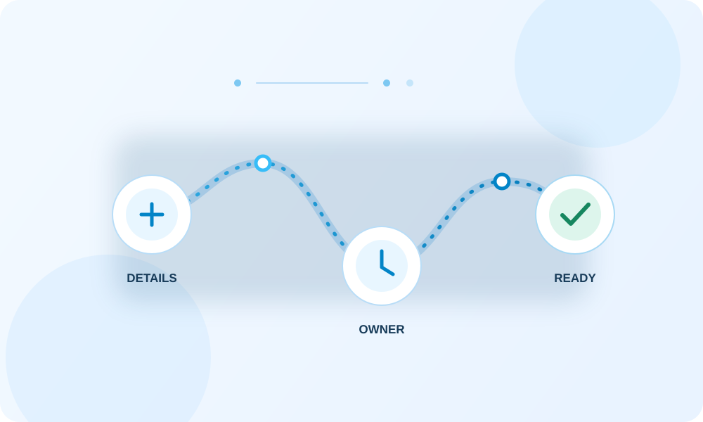
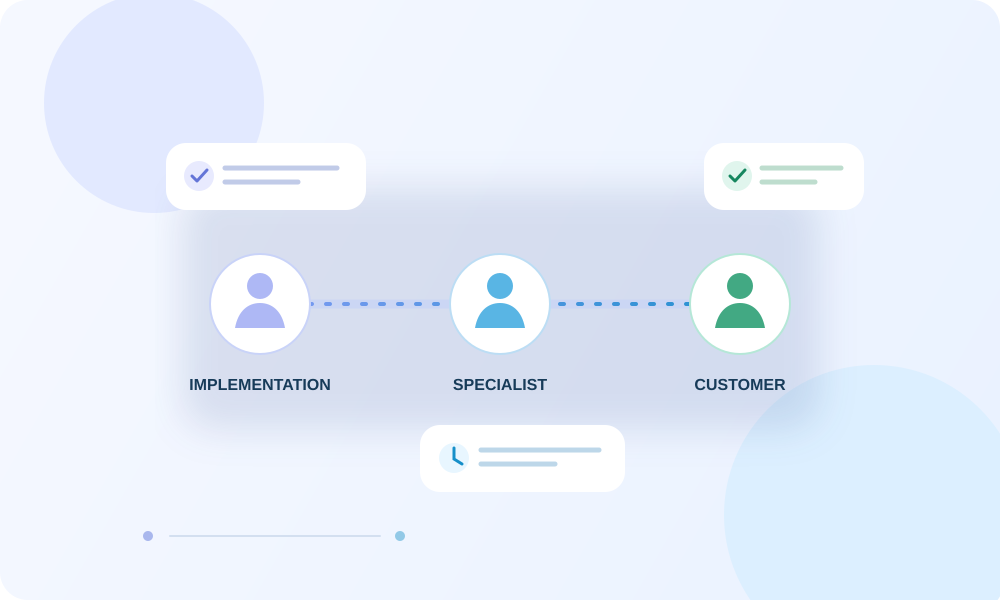
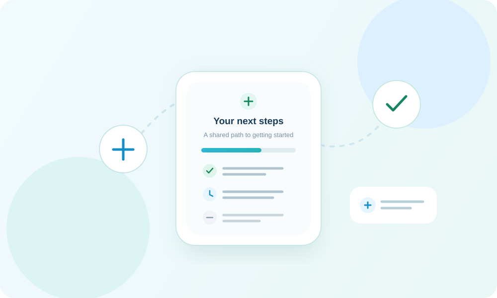
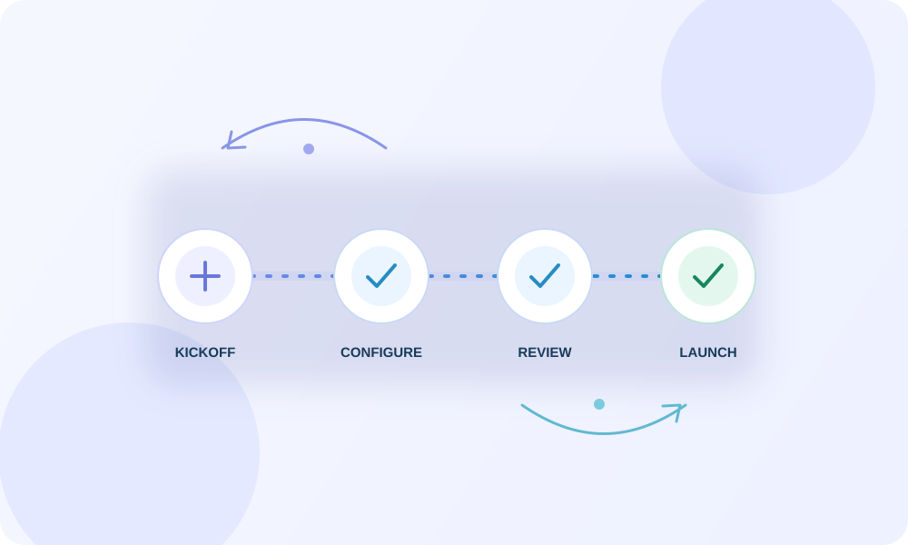

Missing setup details hold up work
Request typed customer information through a private link and see required answers that are still missing.
For B2B SaaS implementation teams
Missing setup details, unclear task ownership, and forgotten follow-ups can stall the journey from signed contract to go-live. Relay brings customer requests, implementation work, and readiness gaps together so your team can see what needs attention next.
Explore a pre-loaded workspace with fictional records. Changes stay in this browser.
A clearer path from kickoff to launch
Purpose-made illustrations show how Relay connects setup requests, team ownership, and customer progress.




Where onboarding gets stuck
Relay helps implementation teams make the next step visible to both the team and the customer.
Request typed customer information through a private link and see required answers that are still missing.
Keep task owners, due dates, prerequisites, and blockers beside each customer implementation.
Review overdue tasks, open work, and portfolio health before a delay becomes a surprise.
Save a checked onboarding process as a template and start each customer journey from a consistent plan.
Works with tools you use
Workspace owners can connect HubSpot and Slack after Relay's provider setup is complete. These are the integrations currently supported.
Built by the founder
Customer onboarding often breaks down between a signed contract and go-live because setup details, task owners, and prerequisites are scattered across emails and spreadsheets. I built Relay to unify reusable workflows, typed client responses, and readiness-gap tracking so teams can catch blockers early and launch customers on schedule.
Relay is early-stage. We don't publish customer logos, testimonials, or quantified results without permission and verification.
Explore Relay's interactive sample workspace, built with fictional records.